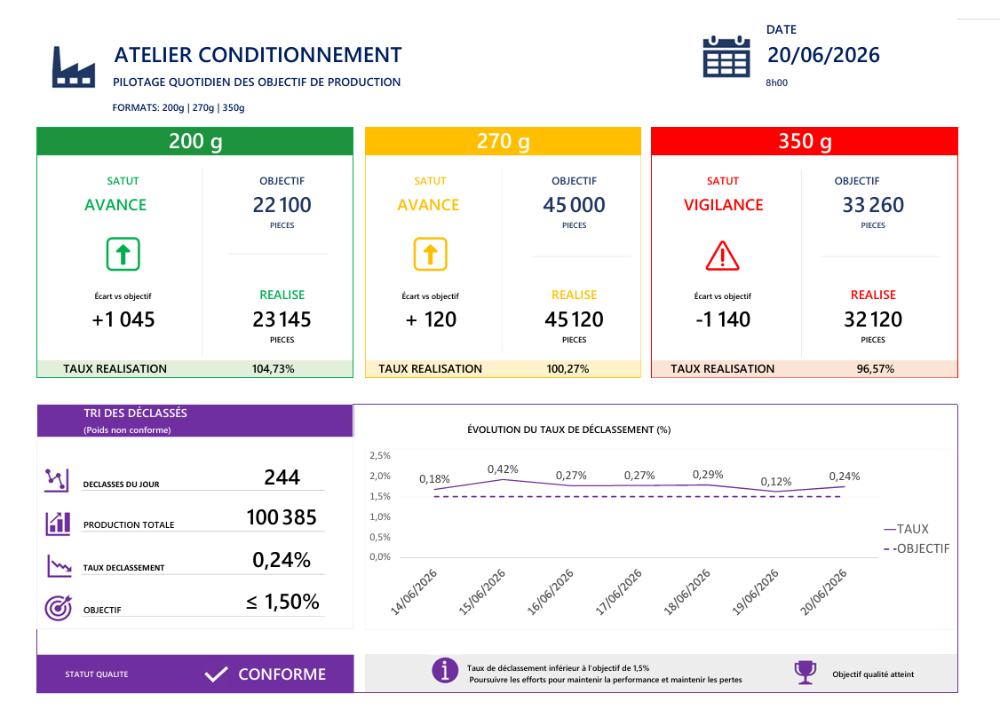
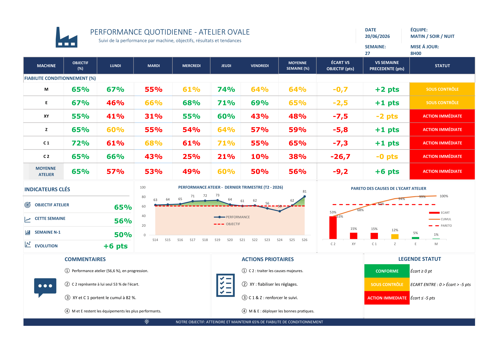

Projet personnel — conception d'outils visuels pour piloter la production, la qualité et la performance atelier au quotidien.
Données dispersées et peu exploitables lors des réunions de production.
Concevoir des supports visuels simples, imprimables et faciles à maintenir.
Une lecture immédiate de la performance et des écarts à traiter.
Deux outils complémentaires pour animer la performance terrain et faciliter les échanges opérationnels.

Pilotage quotidien de la production, des objectifs et des déclassés.

Suivi hebdomadaire de la performance des équipements et de l'atelier.
Dans de nombreux ateliers, les indicateurs sont affichés manuellement sur des tableaux physiques et offrent peu de visibilité sur les écarts ou les tendances.
L'objectif de ce projet était de créer des supports simples permettant aux équipes terrain d'identifier rapidement les priorités d'action.
des performances de production et qualité
dans l'identification des écarts et dérives
des équipes lors des réunions terrain
Microsoft Excel pour la conception des tableaux de bord, la structuration des données et l'automatisation des indicateurs de performance.
Voir le détail du projet et les fichiers Excel.
Voir le projet GitHubProjet réalisé en autoformation afin de développer des outils simples et directement utilisables en environnement industriel.
Me contacter